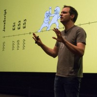

Pre css day - Bramus
Bramus van Damme
About Bramus van Damme
Bramus is a web developer from Belgium. He works as a Chrome Developer Relations Engineer at Google. Today he talks about view transitions.
Summary of Bramus's lecture
Bramus talked about view transitions. Which is a new web api which you can transition between 2 element. He talked about how to use this on a single page application. He gave a step by step guide starting from very easy view transition to more complex ways of defining page transitions adding pseudo classes. Then he kinda lost me. But the view transitions api was really interesting.
Conclusion: what I learned
The view transitions seems really interesting to me. It is something i want to try out and experiment with. I find the transition for multi page certainly interesting, because it's something i thought was always a bit impossible to do.